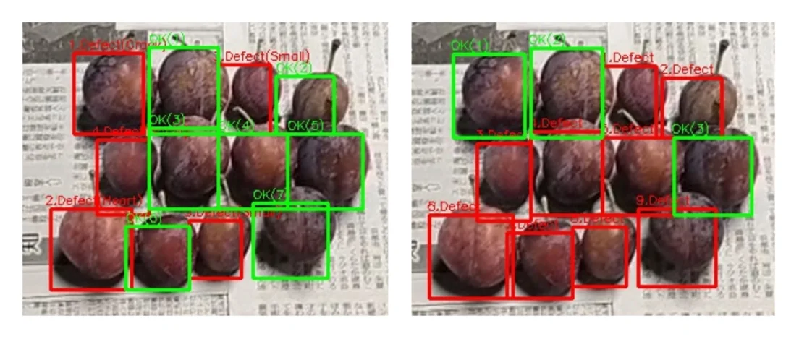
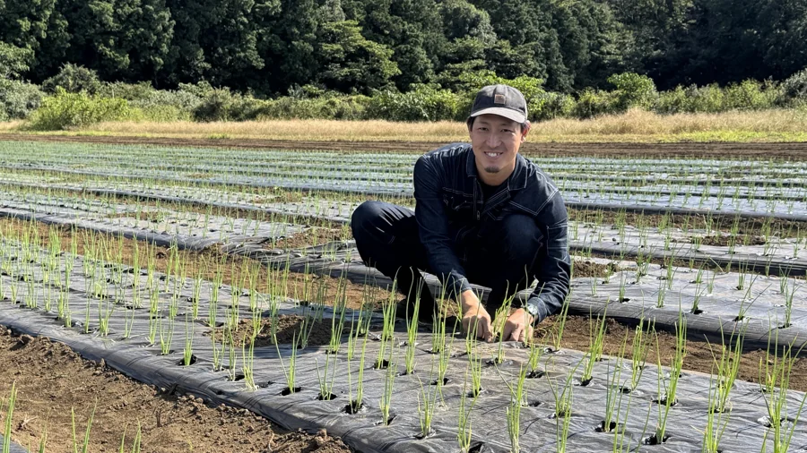
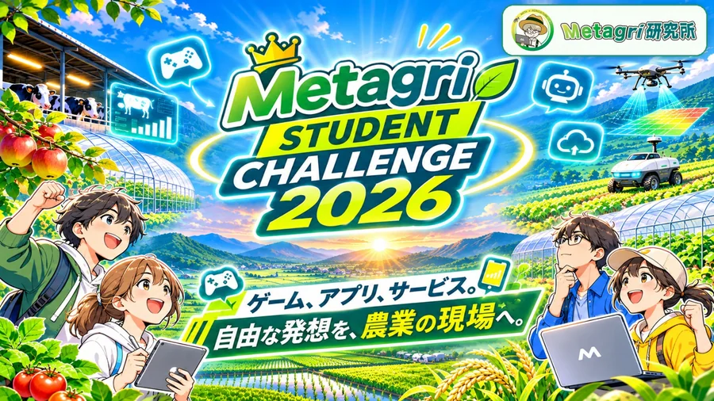
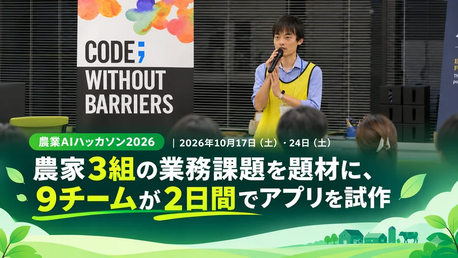
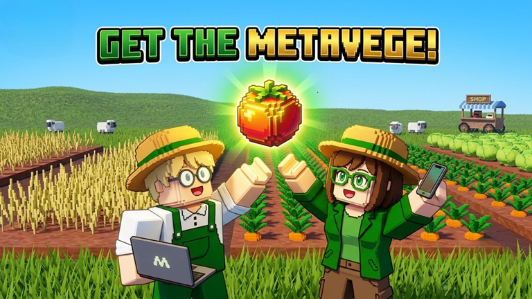
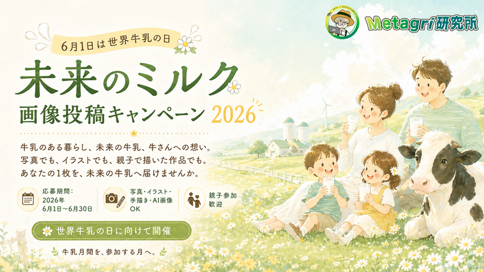
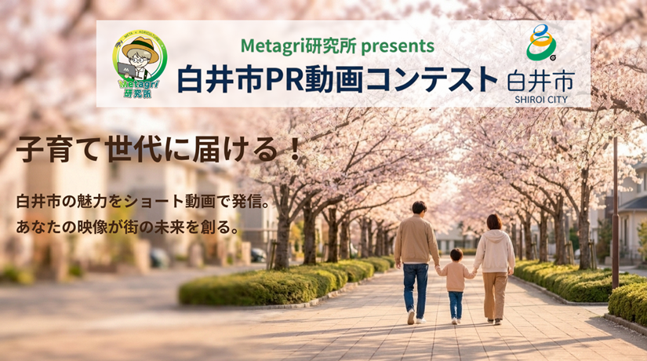
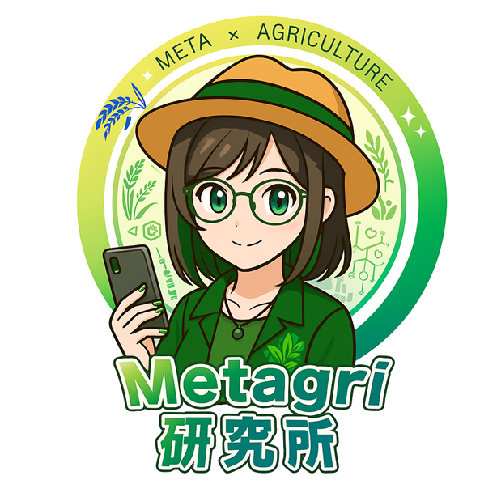
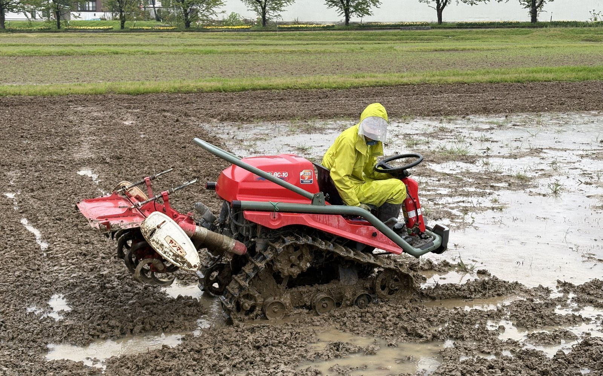

インターンで困ったこと、正直に話します
入った直後の不安が、漫画→動画→クイズの学習ステップで自然にほぐれていった話。
投稿を見る
Metagri研究所 学生インターン募集
農家の声を記事にするメディア運用。読書会や勉強会を企画するコミュニティ運営。興味のあるコースから、AIを使って農業に関わる実務を始めてみませんか。
有償／リモート中心／週10時間程度／3ヶ月から
Metagri研究所の現在地
関心のあるコースを選び、最初の1か月は担当者と一緒に一つの課題から始めます。
農業AI通信
農家の工夫や試行錯誤を、記事やSNSで届けます。
最初の課題の目安 リサーチメモ1本
プルーンのAI選果の事例を見るMetagri研究所
Discordで、農家や学生が学び合える場をつくります。
最初の課題の目安 イベント1件の告知・進行補助・まとめ
学生主催の読書会の事例を見る
yamonさんが北海道余市町の実家の農園で実践。海外の事例を調べ、スマホと生成AIで規格外の実を見分けられるか試しました。撮り方による見逃しや、時短効果を確認できなかったことまで、農業AI通信の連載にまとめました。
学生インターンがDiscordで『数値化の鬼』の読書会を企画・進行しました。11月の最終回では、その場で読む時間を設け、章の要点と問いを共有。農家や学生が、仕事や生活のどんな場面で本の学びを使えるかを話し合いました。
農家への取材から、現場の課題を題材にした開発イベントまで。研究所として進めているプロジェクトです。

農業AI通信が、バー経営から就農したAjito Farmの山田さんを取材。出荷前の販路探しにAIをどう使ったかを、本人の話からたどりました。
写真出典 Ajito Farm公式サイト 農業AI通信の取材記事を読む
農業と地域の5つの課題から一つを選び、生成AIを使って企画や試作に挑む学生向けコンテスト。個人部門の一次審査は、インターン選考のトライアル課題も兼ねます。
テーマと応募要項を見る
日本マイクロソフト、AKKODiSと共催。研究所が農家3組に聞いた困りごとを開発テーマに整理し、参加した9チームが記録・点検などの課題に応えるアプリを試作しました。
開催レポートと試作事例を見る
毎朝の農業×web3クイズ配信を支える仕組み。インターンは、問題追加や運用しやすい設計に関わります。

農業のリアルな課題を、ゲームとして触れられる入り口に変える取り組み。学習体験の設計を学べます。

SNS投稿や称号NFT、牧場の特製カヌレを組み合わせた応援企画。人の参加を生む設計を学べます。



農園体験、収穫、マルシェ販売、クラウドファンディング設計など、現場で得た気づきを事業の形にする企画が進んでいます。
Problem
AIで文章や資料は作れるようになりました。だからこそ差になるのは、現場の声を聞き、「誰のために、何を改善するのか」を考え、反応を見て直す経験です。
What You Gain
Culture
評価されるのは、作業量だけではありません。どう考え、どう共有し、どう直したかを見ます。
作業の前に、目的・相手・期待する変化を確認する。
完璧を待たず、早く出してフィードバックで直す。
詰まったら抱え込まず、状況と調べたことを添えて相談する。
自分の担当だけでなく、プロジェクト全体の成功を見る。
改善の提案を受け取り、分からない点を相談して次の行動に生かす。
How It Works
Discordで活動開始やタスクを共有します。週1回のオンライン定例で、進め方や学業との両立について相談できます。
その週に使える時間を伝え、担当するタスクを決めます。
調査メモや告知案を途中で共有し、方向性を確認します。
定例ミーティングやDiscordのコメントで改善点を話し合います。
記事の構成案やイベントの告知・開催レポートを仕上げます。
何を学び、次に何を直すかを記録します。
Student Voices
不安を抱えたまま始めた学生も、AI、発信、コミュニティ、農業との接点を通じて、自分なりの関わり方を見つけています。
町田さん
テーマ別交流会 / コミュニティ活動
インターンという言葉に責任の重さや堅苦しさを感じていましたが、実際は「面白い」を原動力に活動ができています。
りつとさん
Instagram運用 / AI活用
NFTやweb3に不安がありましたが、入った後にしっかりとしたフォローアップがあり、自分のペースで活動できるようになりました。
📱 REAL POSTインターン生のリアルは、Instagramでも発信中。
参加前の不安は、むしろ自然です。
AI、web3、農業に詳しくなくても、活動後のフォローを受けながら進められます。
SNS運用や交流会を通じて、投稿、企画、現場課題の見方が変わります。
畑に出るだけでなく、発信、デザイン、AI、コミュニティから農業に関われます。
Fit
Requirements
高校生、大学生、大学院生、短大生、高専生、専門学生。学年・学部、農業やAIの経験は問いません。
最低3ヶ月から。継続や卒業は期間終了後に相談して決めます。
週10時間程度（週5時間程度から相談可）。学業、テスト期間、就活時期に合わせて稼働量を調整できます。
通常の活動はリモート中心。主なコミュニケーションはDiscordで行います。現地取材を希望する方は、下の別募集をご確認ください。
Discord、生成AI、スプレッドシート、ドキュメント類。
業務委託契約（準委任・3ヶ月ごとに合意で更新）。報酬は稼働1時間あたり1,200円〜1,500円で算定します。委託内容・報酬額・支払期日などの取引条件は、契約前に書面でお示しします。
各コース若干名。応募締切は2027年3月31日です（定員になり次第終了）。
現場に行きたい方へ｜別募集
こちらは学生・社会人が対象です。お住まいの近くで、電車で日帰りできる範囲の農家取材を想定しています。
交通費を負担し、報酬は時間に応じて支払います。単価、準備・移動・執筆などの支払対象時間、活動頻度、契約形態は開始前に相談します。
学生インターンとは担当内容・条件・受付先が異なります。現地取材の相談は、農業AI通信の案内ページからお願いします。
取材メンバーの仕事内容・条件を見るNext Step
FAQ
参加できます。農業経験よりも、現場の声を聞き、分からないことを調べ、学びをログに残す姿勢を重視します。
大丈夫です。AIツールの操作だけではなく、調査、要約、企画、発信にどう使うかを実践の中で学びます。
週10時間程度が目安で、週5時間程度から相談できます。学業やアルバイトとの両立を前提に、活動量は相談しながら決めます。
参加できます。通常の活動はリモート中心です。Discordでの相談やミーティングの進め方・頻度は、活動開始前に確認します。
メディア運用では調査メモや記事構成、SNS投稿案を作ります。コミュニティ運営ではイベントの告知文、当日の進行メモ、開催後の記録などを作ります。
両立できます。テスト期間や就活時期など、学業を優先したい時期は柔軟に調整します。
スキルの完成度より、目的を考える姿勢、未完成でも共有できる姿勢、学びを残す姿勢を見ます。
大丈夫です。フォームで「詳細を聞きたい」と送るか、Instagram DMまたは公式LINEから気軽にメッセージしてください。
Apply
フォームの「インターンに応募した理由」欄に、関心のあるコースと、やってみたいことをお書きください。どちらが合うか迷っている方は、Instagram DMや公式LINEでも相談できます。
現地取材メンバー（学生・社会人）の相談は、農業AI通信の案内ページへお進みください。
フォームが開きにくい場合は、フォームを別タブで開くか、Instagram DM、公式LINEから「インターンについて聞きたい」と気軽にメッセージしてください。
Last Call
調べる、試す、共有する。自分に合う担当内容や活動時間から、一緒に相談しましょう。